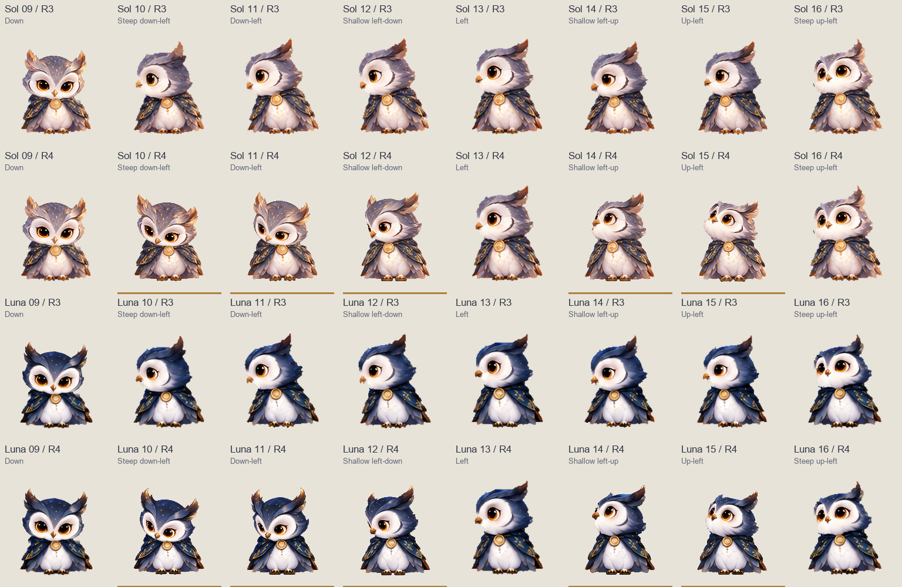

Sol & Luna · V1
v1.1.0 · V1 + R4 · 已通过审阅
本次分别重绘 Sol、Luna 的 10、11、12、14、15 方向：左下三档、左上两档。9、13、16 保留作衔接基准。逐帧比较头部俯仰、眼神与眉羽，检查是否仍是同一只猫头鹰。
Sol
金色下划线标记本轮修改方向 · 其余帧不变
Luna
金色下划线标记本轮修改方向 · 其余帧不变
已校验：每只只替换 10、11、12、14、15 方向，其余 83 格像素与 R3 完全一致，pet.json 原样保留。新图由内置 imagegen 分别绘制整只角色；后期仅做透明边缘处理、整只等比缩放与定位。
方向编号从屏幕正上方开始，顺时针每 22.5° 一格。这里是网页预览，尚未重新实测原生应用触发。展开 9–16 方向 R3／R4 对照图
